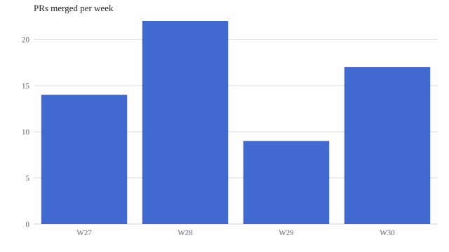
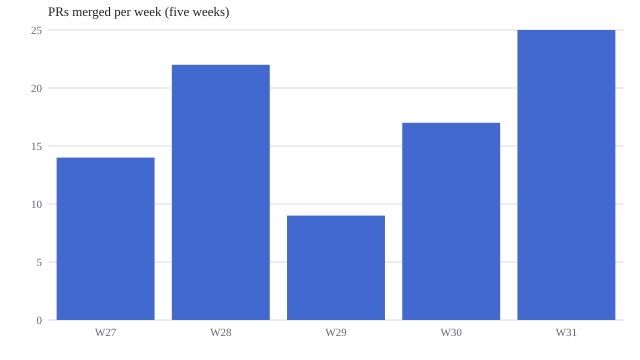
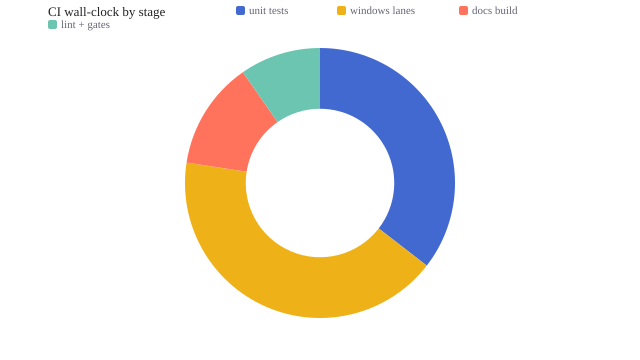
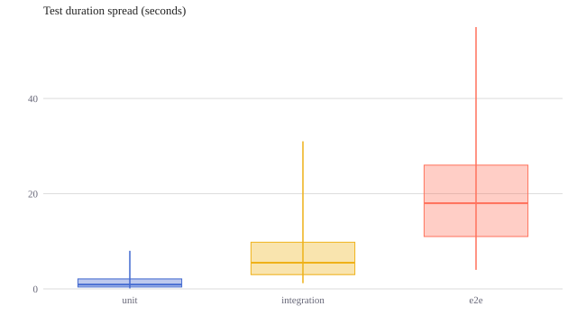
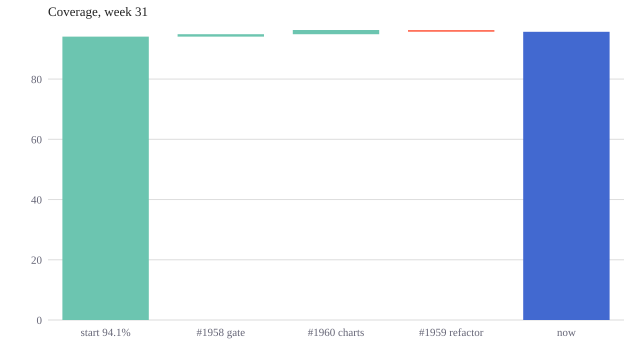
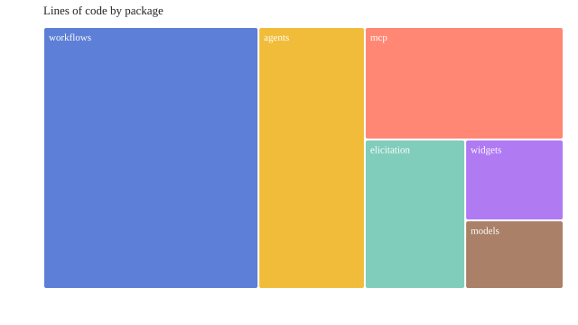

Tutorial: Chart Widgets with Claude¶
You'll finish this tutorial having asked Claude for a chart and watched what actually crosses the wire: a ~260-byte JSON spec, not renderer code. Then you'll change the chart with a patch that costs tens of bytes, tour the four chart types new in 11.3.0 (donut, box, waterfall, treemap), export a chart as a standalone SVG, and cast a reusable form template. Every number and error message below was measured against a live 11.3.0 render — nothing is transcribed from memory.
This page is the narrative walk-through. The contract itself — all nine types, row shapes, options, the kernel seal — lives in the chartkit reference; cross-reference it as you go.
Prerequisites¶
- Python 3.10 or newer
attune-ai11.3.0 or newer (pip install -U attune-ai)- For the conversational flow: the attune-ai plugin in Claude Code
(the
chart_render_widgetMCP tool ships with it)
Everything here also runs outside a Claude session — each step shows the plain-Python equivalent, so you can follow along in a REPL.
The idea in one paragraph¶
chartkit (the chart_render_widget MCP tool) splits chart-making
in two: the model authors a small declarative JSON spec, and a sealed
~10 KB JavaScript kernel — shipped inside the package, no CDN — turns
that spec into themable SVG. Claude never writes renderer code, so a
chart costs roughly 100 tokens to create. Updates are RFC 7386 JSON
Merge Patches against the stored spec, so changing a title costs ten.
Step 1 — Ask for a chart¶
In a Claude Code session with the plugin, say:
Claude calls chart_render_widget with a stable chart_id and this
spec — the entire authored payload:
{
"v": 1,
"type": "bar",
"data": [
{"week": "W27", "prs": 14},
{"week": "W28", "prs": 22},
{"week": "W29", "prs": 9},
{"week": "W30", "prs": 17}
],
"encodings": {
"x": {"field": "week", "type": "nominal"},
"y": {"field": "prs", "type": "quantitative"}
},
"options": {"title": "PRs merged per week"}
}
Measured: 260 bytes as compact JSON — roughly 65 tokens. The tool
returns {"success": true, "html": ..., "persistence": "stored — next
update may send a patch"}, and the ~11 KB html (kernel + spec)
renders on the widget surface as:

The same call from plain Python:
from attune.widgets.chart_widget_tool import render_chart_widget
spec = {...} # the JSON above, as a Python dict
result = render_chart_widget("prs-weekly", spec=spec)
result["success"] # True
result["persistence"] # "stored — next update may send a patch"
Authoring mistakes fail field-level, not with a stack trace. Leave
out the y encoding and the whole result is
{"success": False, "problems": ["encodings.y: Field required"]} —
phrased so the calling model can fix its own spec and retry.
Step 2 — Update it with a patch, not a new chart¶
Now say:
Because the spec persisted under chart_id, Claude does not
re-send the widget. It sends a merge patch (RFC 7386: objects merge,
null deletes a key, arrays and scalars replace wholesale):
{
"data": [
{"week": "W27", "prs": 14},
{"week": "W28", "prs": 22},
{"week": "W29", "prs": 9},
{"week": "W30", "prs": 17},
{"week": "W31", "prs": 25}
],
"options": {"title": "PRs merged per week (five weeks)"}
}
Measured: 184 bytes (~46 tokens) — arrays replace wholesale, so
the data rides along. A title-only patch,
{"options": {"title": "Merged PRs, weekly"}}, measures 42 bytes
— about ten tokens for a live edit:

Degradation is legible, never silent: specs persist in session memory with an 8-hour TTL, and when no backend is reachable the tool refuses the patch and says exactly why — "Chart persistence is unavailable (no memory backend reachable) … Re-send the FULL chart spec for this chart_id instead of a patch."
Step 3 — The 11.3.0 types¶
Four types joined bar, line, scatter, area, and heatmap in
11.3.0. Each is the same grammar — only the row shape changes. All
four specs below measured between 322 and 395 bytes.
Donut — share of a whole¶
Where does our CI wall-clock go? unit tests 11 min, windows lanes
13, docs build 4, lint and gates 3. Donut, please.
encodings.y carries the positive slice value (322-byte spec):

Box — distribution, five stats per row¶
Box rows carry pre-computed min, q1, median, q3, max —
the kernel never aggregates raw samples; you (or Claude) summarize
first. Forget a stat and the render fails with a problem naming the exact
row and key: "spec: Value error, data.0.max: box rows need numeric
min, q1, median, q3, max (pre-computed summary stats — the kernel
never aggregates)".
{
"v": 1,
"type": "box",
"data": [
{"suite": "unit", "min": 0.1, "q1": 0.4, "median": 0.9,
"q3": 2.1, "max": 8.0},
{"suite": "integration", "min": 1.2, "q1": 3.0, "median": 5.5,
"q3": 9.8, "max": 31.0},
{"suite": "e2e", "min": 4.0, "q1": 11.0, "median": 18.0,
"q3": 26.0, "max": 55.0}
],
"encodings": {
"x": {"field": "suite", "type": "nominal"},
"y": {"field": "median", "type": "quantitative"}
},
"options": {"title": "Test duration spread (seconds)"}
}

Waterfall — signed deltas to a total¶
encodings.y is a signed delta; bars run at a cumulative offset,
colored by sign, and options.total appends a computed total bar
with your label:
{
"v": 1,
"type": "waterfall",
"data": [
{"change": "start 94.1%", "delta": 94.1},
{"change": "#1958 gate", "delta": 0.8},
{"change": "#1960 charts", "delta": 1.4},
{"change": "#1959 refactor", "delta": -0.6}
],
"encodings": {
"x": {"field": "change", "type": "nominal"},
"y": {"field": "delta", "type": "quantitative"}
},
"options": {"title": "Coverage, week 31", "total": "now"}
}

Treemap — magnitude as area¶
Rows are label + positive value, same shape as donut; the kernel lays out proportional tiles:

Step 4 — Export a static SVG (and the white page that isn't a bug)¶
The widget html needs JavaScript to draw — the kernel runs in the
page. Opening a saved widget file in macOS Quick Look, or any
no-JS surface, shows a white page. That is expected, not a bug.
For README badges, PyPI pages, or docs (like this one), export the drawn SVG instead. Open the saved HTML in a real browser, then in the developer console:
copy(document.querySelector("svg").outerHTML
.replace(/var\(--[a-z0-9-]+,\s*(#[0-9a-fA-F]{3,8})\)/g, "$1"));
The .replace flattens the kernel's theme variables
(var(--chartkit-c1, #4269d0)) to their hex fallbacks so the SVG is
self-contained. The bar chart above exports to a 2,244-byte
standalone .svg; every image in this tutorial was produced exactly
this way.
Step 5 — Cast a form template¶
Charts are the display half of attune's communication grammar. The interactive half — forms Claude asks you — gained the same economy in 11.3.0: the V7 form-template library. Sculpt a recurring form once as a JSON template; cast it per use with slot values.
from attune.elicitation import form_from_template
form = form_from_template("session-contract", {"project": "acme-api"})
form.title # "Session contract — acme-api"
The cast form has four fields (mode, outcome, done-when, effort cap) and renders on the same widget surface as any hand-built form. Below is that exact cast, embedded live — this is the real renderer's output, not a screenshot (on this static page the submit button will tell you it needs a widget-capable session; that legible degradation is itself part of the design):
Session contract — acme-api — interactive form
Validation is shared with hand-built forms — every problem listed, none silently accepted:
from attune.elicitation import FormValidationError
try:
form_from_template("session-contract", {})
except FormValidationError as exc:
exc.problems # ["missing value for slot 'project'"]
Ask for a template that doesn't exist and the error tells you what
does: unknown template 'release-signoff' — available:
session-contract. When collecting answers, pass the template name
as template_id — responses from the same template share that join
key, so repeated casts become a comparable series across sessions:
from attune.elicitation import collect_form_response
answers = {"mode": "Advancing a defined scope", "outcome": "..."}
response = collect_form_response(
form, answers, template_id="session-contract"
)
Where to go next¶
- chartkit reference — all nine types, row shapes, options, named components, and the kernel seal.
- Diagrams — when you need structure (modules, flows, schemas, states) instead of quantity, ask for a mermaid diagram; that page shows the types with live examples.
- Elicitation forms — the interactive grammar the template library builds on.
- The
elicitskill's Step 0 catalogs available templates; a form earns templatehood on its second recurrence — no speculative templates.